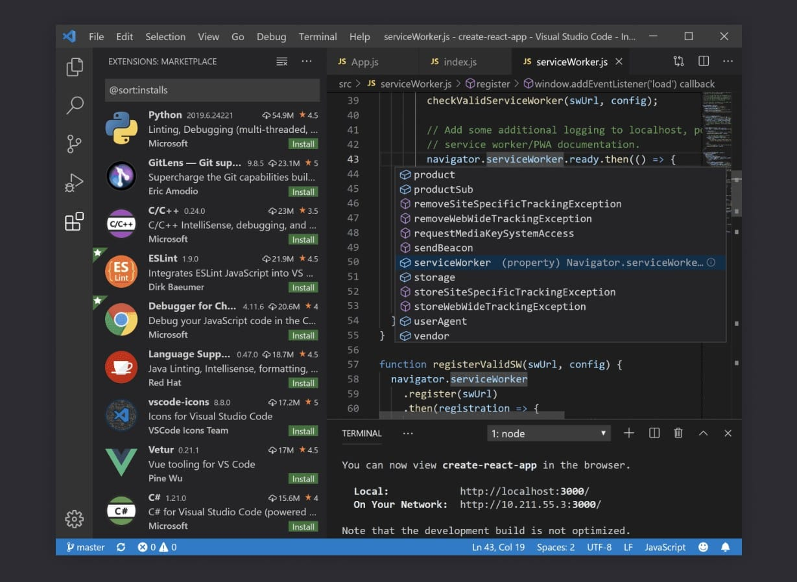

O Visual Studio Code e um editor de codigo-fonte desenvolvido pela Microsoft para Windows,
Linux e macOS. Ele inclui suporte para depuração, controle de versionamento Git incorporado,
realce de sintaxe, complementação inteligente de código, snippets.
